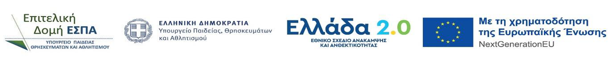

ΑΠΟΣΤΕΙΡΩΣΗ ΤΟΥ ΑΕΡΑ – ΑΝΤΙΜΙΚΡΟΒΙΑΚΗ ΠΡΟΣΤΑΣΙΑ ΣΤΙΣ ΒΙΟΜΗΧΑΝΙΕΣ ΕΠΕΞΕΡΓΑΣΙΑΣ ΤΡΟΦΙΜΩΝ (AIRSTERIL)
Μια νέα μονάδα αποστείρωσης αέρα που αναπτύχθηκε πρόσφατα για τον καθαρισμό του αέρα με σύζευξη της υπεριώδους ακτινοβολίας με φίλτρο HEPA ευρείας γωνίας (WA) και την ύφασμα χαλαζία θα επανασχεδιαστεί και θα ανακατασκευαστεί για να αυξηθεί κατά, τουλάχιστον δύο φορές ο ρυθμός επεξεργασίας αέρα (CADR) και να φθάσει τα 800-1000 m3/hr. Οι ανακασκευασμένες και μεγαλύτερες συσκευές θα εγκατασταθούν και θα δοκιμαστούν στον εσωτερικό χώρο μίας βιομηχανικής μονάδας τροφίμων όπου παράγονται κρεατοσκευάσματα και αλλαντικά (ΚΡΕΤΑ ΦΑΡΜ). Επιπλέον, νανοσωματίδια φωτοκαλύστη θα εναποτεθούν στην εσωτερική επιφάνεια πόρων των φίλτρων HEPA και υφάσματος χαλαζία ώστε να αυξηθεί κατά αρκετές τάξεις μεγέθους ο ρυθμός φωτο-οξείδωσης και αποσύνθεσης των παθογόνων που συλλαμβάνονται στην επιφάνεια πόρων των μέσων φιλτραρίσματος. Οι μορφολογικές και φυσικοχημικές ιδιότητες των επικαλυμμένων με φωτοκαταλύτη φίλτρων θα συσχετιστούν με τους ρυθμούς οξείδωσης των παθογόνων και τη διαπερατότητα του φίλτρου. Η ικανότητα του συστήματος αποστείρωσης αέρα να βελτιώνει την ασφάλεια των τροφίμων και να ικανοποιεί τα υψηλά πρότυπα της νομοθεσίας θα πιστοποιηθεί στο βιομηχανικό περιβάλλον της ΚΡΕΤΑ ΦΑΡΜ με συστηματικές παραμετρικές αναλύσεις για τον προσδιορισμό των συνθηκών (μήκος κύματος UV, ταχύτητα αέρα, τύποι υλικών) που μεγιστοποιούν την αποτελεσματικότητα απομάκρυνσης των παθογόνων. Η μακροημέρευση και πιθανή αναγέννηση των φίλτρων με και χωρίς φωτοκαταλύτη καθώς και η κατάσταση (ενεργά, μη ενεργά) των δεσμευμένων παθογόνων (βακτήρια, μύκητες) θα εξεταστούν στην επιφάνεια εισόδου του φίλτρου. Η απόδοση των διαφόρων εξαρτημάτων της συσκευής θα μετρηθεί ξεχωριστά (φίλτρο WA HEPA, UV, UV/φίλτρο, UV/φίλτρο/οθόνη χαλαζία, UV/φίλτρο/οθόνη χαλαζία/ φωτοκαταλύτης) για την κατανόηση και την ποσοτικοποίηση της ατομικής συνεισφοράς και των διαδραστικών τους επιδράσεων σχετικά με τη σύλληψη, την οξείδωση και την απομάκρυνση των διαφόρων παθογόνων (βακτήρια, μύκητες). Η βελτιστοποίηση της απόδοσης κάθε μεμονωμένης μονάδας ως προς την επιλογή του τύπου φωτοκαταλύτη και της μεθόδου επίστρωσης θα γίνει με επεξεργασία των δεδομένων που συλλέχθηκαν με πολυπαραγοντική στατιστική ανάλυση και τεχνητό νευρωνικό δίκτυο. Η βελτιστοποίηση της λειτουργίας όλων των συσκευών που είναι εγκατεστημένες στο εργοστάσιο με την πιθανή επανατοποθέτησή τους θα βασιστεί σε αναλύσεις των καθεστώτων ροής και της απομάκρυνσης μικροοργανισμών συνδυάζοντας υπολογιστική ρευστοδυναμική με μετρήσεις πεδίου.
Συντονιστής-Επιστημονικός Υπεύθυνος
Γιώργος Νικολαϊδης, Καθηγητής
Τμήμα Μηχανολόγων-Μηχανικών, Πανεπιστήμιο Δυτικήσ Αττικής